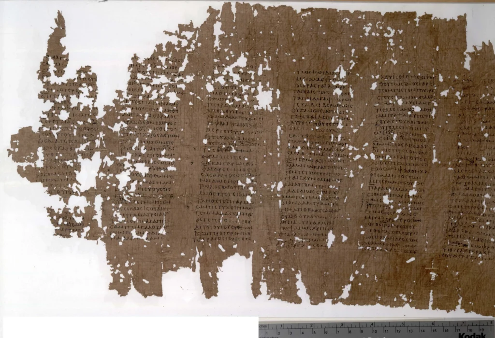
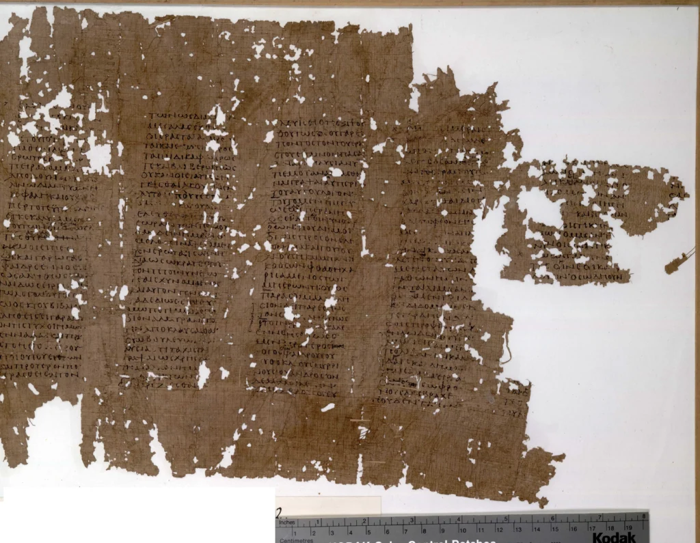
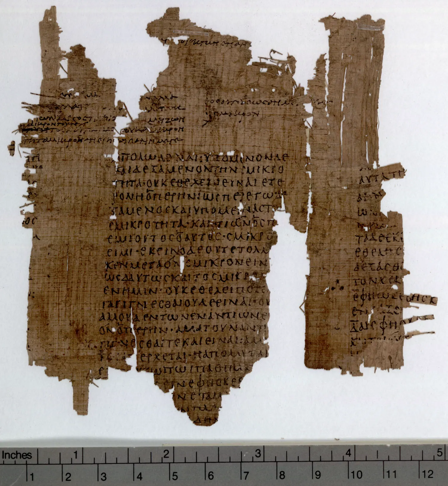

El “Fedón” es una de las obras más significativas y conmovedoras de Platón, donde se presenta una reflexión profunda sobre la muerte, la inmortalidad del alma y la verdadera naturaleza del conocimiento. Ambientado en las últimas horas de vida de Sócrates, este diálogo filosófico no solo explora cuestiones metafísicas fundamentales, sino que también ofrece una visión del carácter y la serenidad de Sócrates ante la muerte.
Contexto y Estructura del Fedón
El “Fedón” transcurre en la prisión donde Sócrates espera su ejecución, rodeado de sus amigos y discípulos, incluyendo a Critón, Apolodoro y Fedón, el narrador del diálogo. A lo largo del diálogo, Sócrates ofrece una serie de argumentos destinados a demostrar que el alma es inmortal y que la muerte no debe ser temida.
El diálogo comienza con una discusión sobre la naturaleza de la muerte y la actitud adecuada hacia ella. Sócrates sostiene que los verdaderos filósofos no deben temer a la muerte, ya que la filosofía misma es una preparación para morir. Esta afirmación establece el tono para los argumentos posteriores sobre la inmortalidad del alma.
Argumentos sobre la Inmortalidad del Alma
-
El Ciclo de los Opuestos: Sócrates propone que todo lo que llega a ser lo hace a partir de su opuesto. Así, la vida y la muerte son opuestos y deben transformarse continuamente uno en el otro. Por lo tanto, la vida surge de la muerte y viceversa, sugiriendo que el alma debe existir después de la muerte para renacer.
-
La Teoría de la Reminiscencia: Según esta teoría, el aprendizaje es en realidad un proceso de recordar conocimientos que el alma ya posee de vidas anteriores. Esto implica que el alma debe haber existido antes del nacimiento y, por lo tanto, es inmortal.
-
La Argumentación de la Similitud: Sócrates argumenta que el alma es similar a las Formas eternas e inmutables, como la justicia y la belleza, debido a su naturaleza inmaterial y racional. Como las Formas son inmortales, el alma también debe serlo.
-
La Simplicidad del Alma: Sócrates sostiene que el alma, siendo invisible e inmaterial, no está sujeta a descomposición como el cuerpo físico. Esta simplicidad e indivisibilidad del alma apoyan la idea de que no puede ser destruida.
La Filosofía como Preparación para la Muerte
Una de las ideas centrales del “Fedón” es que la filosofía es una preparación para la muerte. Sócrates describe la vida del filósofo como un esfuerzo constante por separarse de los placeres y deseos del cuerpo y acercarse a la pureza del pensamiento y la verdad. La muerte, en este contexto, es vista como la liberación definitiva del alma del cuerpo, permitiéndole alcanzar un estado de conocimiento puro y sin restricciones.
El Mito del Más Allá
Al final del diálogo, Sócrates presenta un mito sobre el más allá para ilustrar el destino del alma después de la muerte. Describe un cosmos ordenado donde las almas reciben recompensas o castigos según sus acciones en vida, y donde las almas puras y filosóficas disfrutan de una existencia más elevada y plena. Aunque Sócrates reconoce que este relato es un mito, lo utiliza para subrayar sus argumentos filosóficos y ofrecer consuelo a sus amigos.
La Muerte de Sócrates
El “Fedón” concluye con la descripción de la muerte de Sócrates. Bebiendo la cicuta, Sócrates se enfrenta a su destino con calma y dignidad, reafirmando sus creencias hasta el final. Su actitud serena y su disposición a aceptar la muerte como una transición natural reflejan la coherencia entre su filosofía y su vida.
Conclusión
El “Fedón” es una obra que combina profunda reflexión filosófica con una narrativa emotiva. A través de los argumentos sobre la inmortalidad del alma y la visión de la muerte como una liberación, Platón presenta una visión del mundo donde la filosofía ofrece consuelo y esperanza frente a la mortalidad. La serenidad y el coraje de Sócrates ante la muerte no solo destacan su sabiduría, sino que también inspiran a los lectores a considerar sus propias actitudes hacia la vida y la muerte. El “Fedón” sigue siendo una fuente inagotable de reflexión sobre la naturaleza del alma, la búsqueda de la verdad y el significado de la existencia humana.



Oxford Papyrology (2022). P.Oxy. XV 1809. Plato, Phaedo. University of Oxford. Online resource. https://doi.org/10.25446/oxford.21133039.v1
Nueve columnas consecutivas de un rollo de papiro que contiene el diálogo Fedro de Platón (242d-244e). En el formato de un Texto clásico de Oxford, estas nueve columnas ocuparían tres páginas (el diálogo completo ocupa 67 páginas, o aproximadamente 25 veces la longitud del papiro conservado). Las líneas son cortas en proporción a la altura de la columna. Al final de muchas líneas, el escriba añadió un signo complementario (guión o punto) para producir un margen derecho uniforme. Acentos, respiraciones y marcas de elisión fueron insertados por un segundero, que también introdujo correcciones. Pero el corrector no observó muchos errores obvios e insertó muchas variantes que no estaban registradas, la mayoría de ellas inferiores a las adoptadas normalmente. De especial interés son las “comas dobles” en la segunda columna, líneas 21 y siguientes. (243a), que marca una cita del poeta Estesichorus dirigida a Helena de Troya (Poetarum Melicorum Graecorum fragmenta fr. 192, ed. Davies), escrita en prosa:
“Esa historia no tiene nada de cierto, y ni siquiera subiste a barcos bien equipados, y nunca pusiste un pie en la torre de Troya”.
En la quinta columna, el coronis marca el final de una sección.